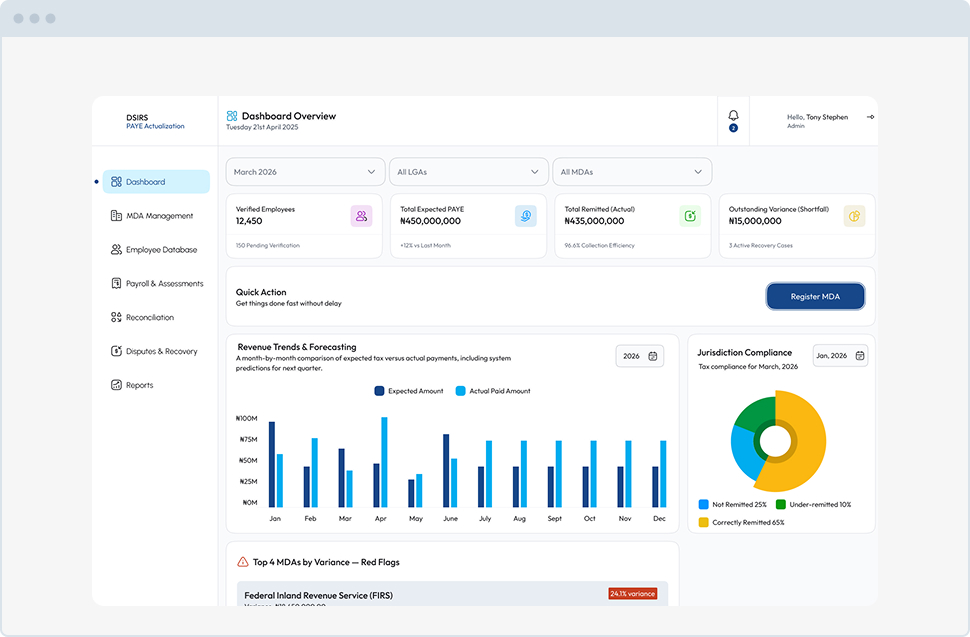
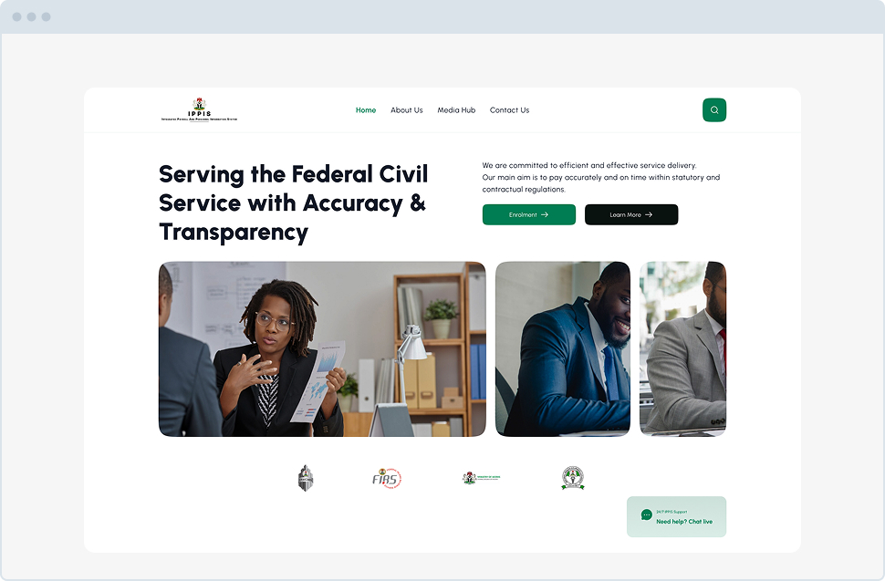

Omega Search Interface
Prodect Design Engineer
2026
Tax officials wasted hours manually piecing together taxpayer identities scattered across separate databases like NIN, BVN, and payroll records. I designed a unified search portal that instantly aggregates all scattered data into one comprehensive Taxpayer Lifecycle Profile.

Key Accomplishments
- Eliminated manual data gathering by centralizing financial, employment, and demographic records.
- Empowered tax auditors to instantly view real-time employment changes and jurisdiction history.
- Designed an intuitive, scalable dashboard that immediately flags outstanding tax liabilities and compliance risks.
.jpg)
More Projects

State - PAYE Actualization
Designed an enterprise revenue intelligence portal connecting state and federal agencies to automate payroll audits and recover missing tax remittances.
View Project
IPPIS Website Redesign
Redesigned the primary payroll portal for over one million federal employees, turning a frustrating legacy system into a responsive, self-service information hub.
View Project